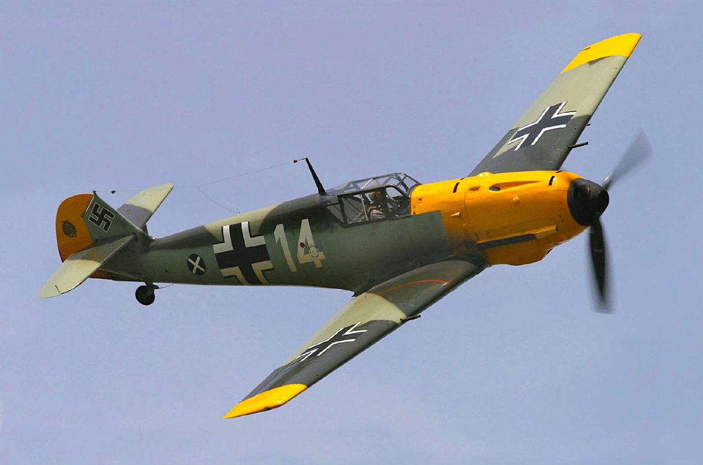

Spitfire
Introducción
El Supermarine Spitfire fue un caza monoplaza británico usado por la Royal Air Force y muchos otros países Aliados durante la Segunda Guerra Mundial. Continuó siendo usado hasta los años 1950, tanto como caza de primera línea como en funciones secundarias. Fue producido en mayores números que ningún otro avión británico y fue el único caza de los Aliados en producción durante toda la guerra. El Spitfire fue diseñado por R. J. Mitchell, diseñador jefe de Supermarine Aviation Works, como un interceptor de alto rendimiento y corto alcance. Mitchell continuó refinando el diseño hasta que murió de cáncer en 1937, con lo cual su colega Joseph Smith se convirtió en diseñador jefe. El ala elíptica del Spitfire tenía una sección transversal delgada que le permitía alcanzar una velocidad punta más elevada que el Hawker Hurricane y varios cazas contemporáneos. La velocidad era vista como una cualidad esencial para llevar a cabo la misión de defensa nacional contra los bombarderos enemigos.
Diseño
Sin embargo, Mitchell pudo resolver el problema. Se ha sugerido que tras observar algunos aviones de Heinkel, Mitchell decidió que el uso de un ala de forma elíptica, que tendría más cuerda y permitiría instalar las ocho ametralladoras, mantendría una resistencia baja como el diseño anterior. El ingeniero de aerodinámica de Mitchell, Beverly Shenstone, sin embargo, señaló que el diseño de Mitchell no era una copia directa del Heinkel He 70, como se ha afirmado. Además, el ala del Spitfire sería más delgada y con una sección transversal diferente, lo que supondría un desarrollo en paralelo de la misma solución técnica: la forma elíptica es más eficiente en término de distribución de la sustentación a lo largo del ala, además de tener buenas cualidades en caso de entrada en pérdida, un dato que Mitchell habría reconocido.
Producción
El prototipo (K5054) realizó su primer vuelo el 5 de marzo de 1936 en el aeródromo de Eastleigh, solo cuatro meses después del primer vuelo del Hawker Hurricane. Las pruebas continuaron hasta el 26 de mayo de 1936, cuando el capitán J. Summers, piloto jefe de pruebas de Vickers, voló en el prototipo a la base aérea de Martlesham Heath. El Ministerio del Aire realizó un pedido de 310 aviones el 3 de junio de 1936, antes de que se hubiese presentando ningún informe del Aeroplane & Armament Experimental Establishment. El avión apareció al público en una exhibición aérea en Hendon el 27 de junio de ese año. Para la construcción de los Spitfire en las cantidades pedidas, se creó una nueva fábrica en Castle Bromwich, cerca de Birmingham como sombra de la fábrica de Supermarine en Southampton. Aunque el proyecto fue finalmente dirigido por Lord Nuffield, que era experto en construcciones en masa, la fabricación del revestimiento del Spitfire era demasiado compleja y se necesitó la ayuda de los ingenieros de Supermarine y Vickers-Armstrong. La fábrica fue establecida en julio de 1938 y dos meses después se comenzó a trabajar. Se fabricaron más de 23.000 unidades de todas las variantes, incluyendo los aviones biplaza de entrenamiento. Algunos Spitfire estuvieron en servicio hasta la década de 1950. Aunque su rival en la guerra, el Bf 109, superó la producción del Spitfire, se trata del único caza británico en estar en producción continua antes, durante y después de la II Guerra Mundial. El Spitfire Mk V fue el tipo más común, con un total de 6479 unidades fabricadas, seguido de los 5665 Spitfire Mk IX.
 |
 |
 |
 |
 |
 |